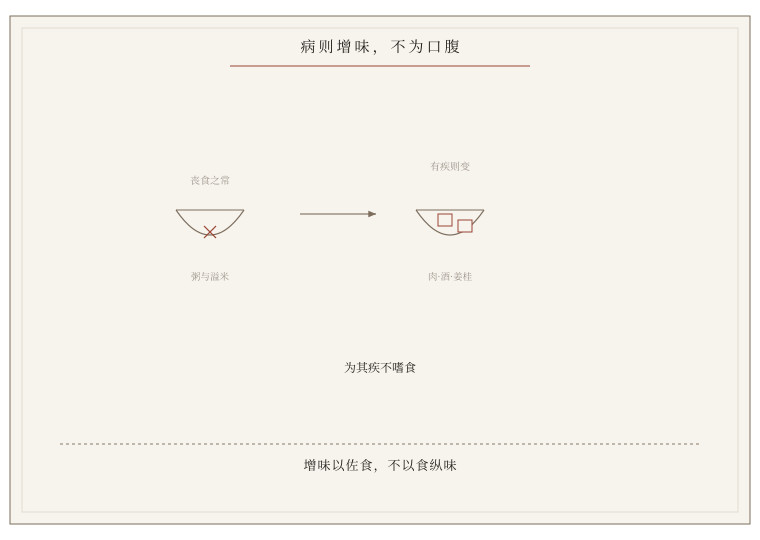

檀弓上 · 三·三十九 · 第 242 课
曾子曰：「丧有疾，食肉饮酒，必有草木之滋焉。」以为姜桂之谓也。注「增以香味，为其疾不嗜食」「为记者正曾子所云草木滋者，谓姜桂」。
说什么事：居丧而病，可以食肉饮酒；但所增者只是姜桂之味，不是厚味。
落在哪一层：礼，兼及礼数与身体。
为何编在此位：上节论哭所之轻重，此节论食之变。礼于死生之际，不许毁身。
【经】曾子曰：「喪有疾，食肉飲酒，必有草木之滋焉。」以為薑桂之謂也。
【注】增以香味，为其疾不嗜食。为记者正曾子所云草木滋者，谓姜桂。
【疏】此一节论居丧有疾，得食美味之事。知非曾子之言而云「为记者」，以上云「草木之滋焉」，下云「以为姜桂之谓也」，是解上「草木之滋」，岂可曾子自言还自解乎？故以为记者正曾子之言。
有疾 居丧而病。《丧大记》「病则饮酒食肉」。
草木之滋 草木所生之味。滋，味也。
姜桂 生姜与桂。皆辛香，开胃。
滋 注「滋音咨」。味之厚者曰滋，此则取辛香以发之。
以为……之谓也 记者释语，非曾子自解。
曾子说：「居丧而病，可以食肉饮酒，但一定要有草木之味。」这是说姜桂之类。
此节两句，前一句是曾子的话，后一句是记者的解释。疏辨之最细：若下句亦是曾子自言，则「草木之滋」四字刚刚说出，随即自己解作姜桂，天下无此语体，故知为记者之辞。此一见汉唐注疏读文之密；一见礼意：丧中之食本薄，病则许肉许酒，而所加者止于姜桂之辛香——为「疾不嗜食」而开其口，非为口腹而纵其欲。
第一层 丧食之常 《间传》：斩衰三日不食，既殡食粥，朝一溢米、暮一溢米。礼之常，食至薄。此非苦人，是使哀得专，而精力不至竭。
第二层 有疾则权 《丧大记》「病则饮酒食肉」。权者，非废礼，是礼自许之变。盖毁身则灭性，灭性则不足以终丧，是更大的不孝。故病而食肉，正所以成丧。
第三层 草木之滋 注意在「必」字与「滋」字。「必」者，非可有可无，是病食之要件；「滋」者，非厚味，是辛香之发。注「增以香味，为其疾不嗜食」——病者口淡，不嗜食则食不下，食不下则力不继，故以姜桂发之。此之谓以味佐食，不以食纵味。
第四层 记者之辞 疏辨下句为记者释语。此一层看似小学，实关大体：礼书之中，何者为圣贤之言、何者为记礼者之释，界限分明，则后人不至以其所释为经。
与今日何干 病中忌口与养病之争，礼给的答案是：救病为先，节文次之；而「救」有度——姜桂调其味，不是厚味。凡以养病为名而纵口者，皆非此节之意。
| 左 | 右 |
|---|---|
| 丧食至薄（粥、溢米） | 礼之常 |
| 有疾，食肉饮酒 | 礼自许之变 |
| 必有草木之滋 | 病食之要件 |
| 姜桂 | 辛香发味，非厚味 |
| 为其疾不嗜食 | 增味以佐食 |
| 为记者正曾子之言 | 经与释之分 |
画一处简素的寝室，视点平。一人卧于榻上（面色清瘦、半坐起），榻前一矮几，几上一只陶碗、一小碟，碟中放着两三片切开的姜与一小段桂皮。榻侧坐着另一人（衣素），一手扶着碗，一手把碟推近。窗外一角枯枝。地上一只空水壶。不写文字、不画人面细节。赭色只用在碟中姜片与榻边一角毡毯上。
